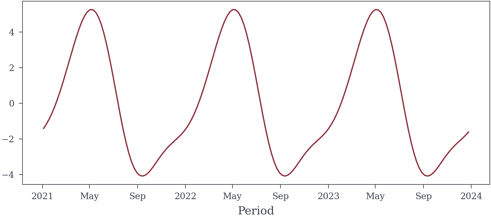

sample_random_data(156, random_seed=3).plot()
I will be using Figure 1 for the rest of the examples on this page.
Edges will be colored to highlight if they represent causal paths (green ), biasing paths (red ), or non-causal paths (black ). See Figure 2 and Figure 3
Nodes that represent exposures (things for which we would like to know the effect of) will be filled with a green () background. The outcome variable of interest will be filled with a blue background (). Variables that are adjusted for are filled with a light gray color () Nodes with a dashed outline are difficult if not impossible to directly observe. Nodes that are not filled and have a solid outline are variables for which we have data (or for which data can be aqcuired).
sample_random_data (N_weeks:int, include_hidden_confounds:bool=False, random_seed:int|None=None)
| Type | Default | Details | |
|---|---|---|---|
| N_weeks | int | Number of weeks to generate | |
| include_hidden_confounds | bool | False | Should hidden confounds be included in the dataset |
| random_seed | int | None | None | Random Seed |
| Returns | Dataset | Dataset containing the variables described by the above causal model |